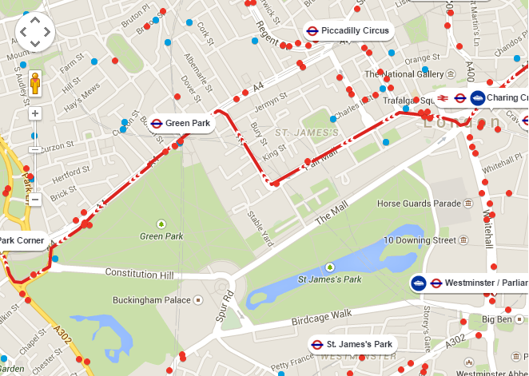

Last refreshed:
| Route Number | Route section | Average disruption time | Trend | Alerted at | Details | Hide |
|---|---|---|---|---|---|---|
| 9 | Picadilly Circus - Knightsbridge | 31mins | ↑ | 16/1/2015 13:14:34 | Show | Hide |
| RV1 | London Eye - The Hop Exchange | 30mins | ↓ | 16/1/2015 14:14:25 | Show | Hide |
| RV1 | London Bridge Station - Oxo Tower | 24mins | ↑ | 16/1/2015 12:13:45 | Show | Hide |
| 11 | Markham Street - Westminster Cathedral | 22mins | ↑ | 16/1/2015 11:44:34 | Show | Hide |
| 364 | Coventry road - Green Lane | 21mins | ↓ | 16/1/2015 12:12:34 | Show | Hide |
| 72 | Wulfstan Street - White City station | 19mins | ↕ | 16/1/2015 14:14:24 | Show | Hide |
| 210 | Hornsey Rise - South Grove | 17mins | ↕ | 16/1/2015 18:32:34 | Show | Hide |
| 375 | Lawns Way - Havering Green | 17mins | ↓ | 16/1/2015 01:14:34 | Show | Hide |
More information about the selected disruption can be displayed here. It can also include a map of some sort if useful.
